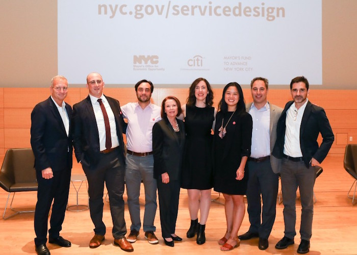
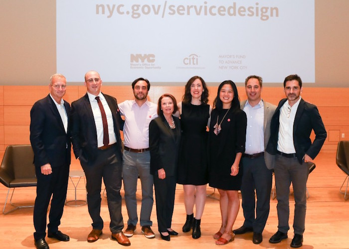

Projects
Throughout my career, I've worked with a wide variety of cultural, corporate and government partners to design service experiences, craft strategy and policy, create digital products, and build teams and capacity.
Capacity and Process
Over the past several years, my primary focus has been to bring modern skills in design, product management, and software development into government. I'm building a diverse team of professionals who practice these skill sets and together, we are developing capacity in our office and with colleagues.

The Service Design Studio at the Mayor’s Office for Economic Opportunity provides a central resource for expertise and best practices in service design to support public servants. It is the nation’s first such initiative dedicated to making public services for low-income residents as effective and accessible as possible. The Studio team provides design consulting services, trainings, and event programming for New York City government agencies.

The Digital Product Team at the Mayor’s Office for Economic Opportunity conducts user research, creates user experiences, and works closely with internal and outside technology teams to prototype, develop, and set ongoing strategy for our portfolio digital services. The team combines agile and human-centered methodologies, while also working within enterprise standards and systems. Read How We're Building Great Products Inside Government.

I have built tools for attracting new talent to government, including a lightweight recruiting website. In addition to recruiting and hiring full time staff, I established our apprenticeship program to expose undergraduate, graduate, and recently graduated students to doing product and design work inside government and allow us to scale our practice.
Service Design

The Service Design Studio at the Mayor’s Office for Economic Opportunity provides a central resource for expertise and best practices in service design to support public servants. It is the nation’s first such initiative dedicated to making public services for low-income residents as effective and accessible as possible. The Studio team provides design consulting services, trainings, and event programming for New York City government agencies.
The Service Design Studio at the Mayor’s Office for Economic Opportunity provides a central resource for expertise and best practices in service design to support public servants. It is the nation’s first such initiative dedicated to making public services for low-income residents as effective and accessible as possible. The Studio team provides design consulting services, trainings, and event programming for New York City government agencies.
The Digital Product Team at the Mayor’s Office for Economic Opportunity conducts user research, creates user experiences, and works closely with internal and outside technology teams to prototype, develop, and set ongoing strategy for our portfolio digital services. The team combines agile and human-centered methodologies, while also working within enterprise standards and systems. Read How We're Building Great Products Inside Government.
I have built tools for attracting new talent to government, including a lightweight recruiting website. In addition to recruiting and hiring full time staff, I established our apprenticeship program to expose undergraduate, graduate, and recently graduated students to doing product and design work inside government and allow us to scale our practice.
My core practice is as a service designer developing deep understanding and proposing enhancements to service delivery and the creation of new service experiences.

As part of HOME-STAT, the most comprehensive street homeless outreach effort in any U.S. city, the Service Design Studio at the Mayor’s Office for Economic Opportunity documented the journey from street to home for homeless residents and proposed enhancements to service delivery, policy, communications and technology. Read the Case Study.

Civic Service Design Tools + Tactics is an introduction to service design for public servants, and a set of practical ways to include design methods in their work. The toolset includes a book, website, and binder.

The Service Design Studio worked on the City’s $10 million initiative to bring free broadband service to five New York City Housing Authority (NYCHA) housing developments, starting with Queensbridge Houses. The Studio engaged Queensbridge residents, nonprofit providers, and City agency staff in the research and prototype testing process to arrive at solutions for connecting and logging in, and other aspects of the service, including Queensbridge Connected.
Digital Products
As part of HOME-STAT, the most comprehensive street homeless outreach effort in any U.S. city, the Service Design Studio at the Mayor’s Office for Economic Opportunity documented the journey from street to home for homeless residents and proposed enhancements to service delivery, policy, communications and technology. Read the Case Study.
As part of HOME-STAT, the most comprehensive street homeless outreach effort in any U.S. city, the Service Design Studio at the Mayor’s Office for Economic Opportunity documented the journey from street to home for homeless residents and proposed enhancements to service delivery, policy, communications and technology. Read the Case Study.
Civic Service Design Tools + Tactics is an introduction to service design for public servants, and a set of practical ways to include design methods in their work. The toolset includes a book, website, and binder.
The Service Design Studio worked on the City’s $10 million initiative to bring free broadband service to five New York City Housing Authority (NYCHA) housing developments, starting with Queensbridge Houses. The Studio engaged Queensbridge residents, nonprofit providers, and City agency staff in the research and prototype testing process to arrive at solutions for connecting and logging in, and other aspects of the service, including Queensbridge Connected.
At the Mayor’s Office for Economic Opportunity, I lead the strategy and delivery of our digital product portfolio, including redesign and redevelopment of legacy products and building new applications and services. Previously, I led design for digital platforms and services for corporate and cultural clients.

ACCESS NYC is an online public screening tool that New Yorkers can use to determine their eligibility for City, State, and Federal health and human service benefit programs. It was redesigned by NYC Opportunity through an iterative prototyping process that engaged residents, social workers, case managers, and agency staff. ACCESS NYC relaunched in March 2017 with a simplified 10-step screening process, plain-language program information, content in seven languages, a location finder, and an accessible, mobile-responsive design. Read the Case Study: Part 1 | Part 2.

Growing Up NYC, in partnership with the City’s Children’s Cabinet, brings the City’s family- and child-related resources together in a mobile-responsive, accessible platform to make it easier for parents to raise strong, healthy children. Initially launched in 2016, Growing Up NYC features easy-to-read age guides with developmental milestones and parenting tips, over 70 City, state, and federally funded benefits and programs, and local events and activities.

The Benefits and Programs API provides benefit, program, and resource information for over 40 health and human services available to NYC residents. The data is kept up-to-date, including the most recent applications, eligibility requirements, and application dates. Information in this dataset is used on ACCESS NYC and Growing Up NYC.
Policy
ACCESS NYC is an online public screening tool that New Yorkers can use to determine their eligibility for City, State, and Federal health and human service benefit programs. It was redesigned by NYC Opportunity through an iterative prototyping process that engaged residents, social workers, case managers, and agency staff. ACCESS NYC relaunched in March 2017 with a simplified 10-step screening process, plain-language program information, content in seven languages, a location finder, and an accessible, mobile-responsive design. Read the Case Study: Part 1 | Part 2.
ACCESS NYC is an online public screening tool that New Yorkers can use to determine their eligibility for City, State, and Federal health and human service benefit programs. It was redesigned by NYC Opportunity through an iterative prototyping process that engaged residents, social workers, case managers, and agency staff. ACCESS NYC relaunched in March 2017 with a simplified 10-step screening process, plain-language program information, content in seven languages, a location finder, and an accessible, mobile-responsive design. Read the Case Study: Part 1 | Part 2.
Growing Up NYC, in partnership with the City’s Children’s Cabinet, brings the City’s family- and child-related resources together in a mobile-responsive, accessible platform to make it easier for parents to raise strong, healthy children. Initially launched in 2016, Growing Up NYC features easy-to-read age guides with developmental milestones and parenting tips, over 70 City, state, and federally funded benefits and programs, and local events and activities.
The Benefits and Programs API provides benefit, program, and resource information for over 40 health and human services available to NYC residents. The data is kept up-to-date, including the most recent applications, eligibility requirements, and application dates. Information in this dataset is used on ACCESS NYC and Growing Up NYC.
I consult city governments regarding digital policy, standards and best practices, leading to legislation being passed and creation of innovation roles.
Built Environment
I designed and produced experiences for the built environment, ranging from intimate immersive media to expansive buildings.

talk@TED is a video recording and display environment created for GE at the TED 2010 conference. Participants responded to prompts via a touchscreen video recording experience inside glowing towers that played back their creations. Collective responses followed TED talks on the TED website after the conference.

News Corporation and Sony Sign at 1 Times Square includes media and interactive software design for a new 35-foot LED sign.

330 Hudson Street creates an immersive media installation in the lobby of a renovated office building.

Sandy Storyline is a participatory documentary that highlights the voices and faces of people affected by Hurricane Sandy, bringing the human impact of this disaster into national conversations about economic inequality, climate change, infrastructure development and the culture of coastal cities in America. By providing people a platform to share their own stories, we hope to contribute to a post-Sandy reconstruction process that is equitable and sustainable for communities, local economies and the environment.

The National Mall Experience is a concept design on behalf of the Trust for the National Mall for a new educational experience across the National Mall, including a mobile platform, kiosks, visitor center, and programmatic activities.

IMC Octave Living is a concept design for a series of new residential communities in China, including six cultural institutions and community-wide communication tools.
talk@TED is a video recording and display environment created for GE at the TED 2010 conference. Participants responded to prompts via a touchscreen video recording experience inside glowing towers that played back their creations. Collective responses followed TED talks on the TED website after the conference.
talk@TED is a video recording and display environment created for GE at the TED 2010 conference. Participants responded to prompts via a touchscreen video recording experience inside glowing towers that played back their creations. Collective responses followed TED talks on the TED website after the conference.
News Corporation and Sony Sign at 1 Times Square includes media and interactive software design for a new 35-foot LED sign.
330 Hudson Street creates an immersive media installation in the lobby of a renovated office building.
Sandy Storyline is a participatory documentary that highlights the voices and faces of people affected by Hurricane Sandy, bringing the human impact of this disaster into national conversations about economic inequality, climate change, infrastructure development and the culture of coastal cities in America. By providing people a platform to share their own stories, we hope to contribute to a post-Sandy reconstruction process that is equitable and sustainable for communities, local economies and the environment.
The National Mall Experience is a concept design on behalf of the Trust for the National Mall for a new educational experience across the National Mall, including a mobile platform, kiosks, visitor center, and programmatic activities.
Sandy Storyline is a participatory documentary that highlights the voices and faces of people affected by Hurricane Sandy, bringing the human impact of this disaster into national conversations about economic inequality, climate change, infrastructure development and the culture of coastal cities in America. By providing people a platform to share their own stories, we hope to contribute to a post-Sandy reconstruction process that is equitable and sustainable for communities, local economies and the environment.
The National Mall Experience is a concept design on behalf of the Trust for the National Mall for a new educational experience across the National Mall, including a mobile platform, kiosks, visitor center, and programmatic activities.